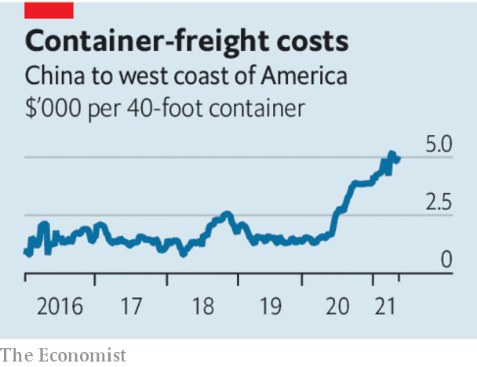
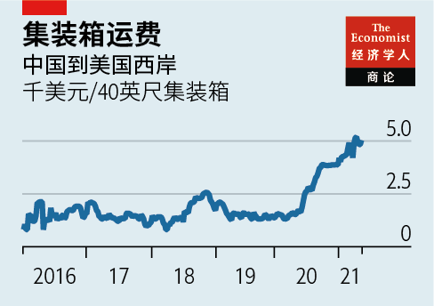

2021-05-19T14:33:26+00:00
Boom and gloom
【首文】繁荣与灰暗
【首文】繁榮與灰暗
The coming global economic boom could have a sting in the tail
全球经济繁荣临近，结局或始料未及
全球經濟繁榮臨近，結局或始料未及
Supply shortages are acute in America
供应短缺问题在美国突显
供應短缺問題在美國突顯
THE GLOBAL economy is entering unfamiliar territory. After a decade of worries about inadequate demand and spending power in the aftermath of the global financial crisis, signs of insufficient supply are now emerging. A lack of goods, services and people means that red-hot demand is increasingly met slowly or not at all. There are already signs that supply bottlenecks may lead to nasty surprises which could upset the post-pandemic recovery. Nowhere are shortages more acute than in America, where a boom is under way. Consumer spending is growing by over 10% at an annual rate, as people put to work the $2trn-plus of extra savings accumulated in the past year. More stimulus is still being doled out.
全球经济正踏入一个陌生地域。全球金融危机后的十年里，人们一直担忧需求和消费力不足，而如今，供应不足的迹象正在显现。商品、服务和人员的匮乏意味着，面对红火的需求，供应日益跟不上甚至完全满足不了。已有迹象表明供应瓶颈可能招致意想不到的糟糕局面，扰乱后疫情时代的经济复苏。美国经济渐现繁荣，短缺问题也最为严重。随着人们把过去一年额外积存的超过2万亿元美金拿出来消费，美国消费支出的年增长率目前超过了10%。还有更多刺激福利正在陆续发放。
全球經濟正踏入一個陌生地域。全球金融危機後的十年里，人們一直擔憂需求和消費力不足，而如今，供應不足的跡象正在顯現。商品、服務和人員的匱乏意味着，面對紅火的需求，供應日益跟不上甚至完全滿足不了。已有跡象表明供應瓶頸可能招致意想不到的糟糕局面，擾亂後疫情時代的經濟復蘇。美國經濟漸現繁榮，短缺問題也最為嚴重。隨着人們把過去一年額外積存的超過2萬億元美金拿出來消費，美國消費支出的年增長率目前超過了10%。還有更多刺激福利正在陸續發放。
The boom is creating two kinds of bottleneck. The first relates to supply chains. There are shortages of everything from timber to semiconductors. The cost of shipping goods from China to America has tripled. Companies have not reported supplier delays this severe in decades. In the past year many firms have cut their investment in logistics. Lockdowns have left some container ships stranded. Companies are trying to go from 0 to 60 and it shows.
经济繁荣正在形成两类瓶颈。第一类与供应链有关。从木材到半导体的各种材料都出现短缺。从中国到美国的货运成本升至原来的三倍。企业在过去好几十年里都没有报告过如此严重的供应商延误。过去一年里许多公司削减了物流投资。封城措施导致一些集装箱船被困。企业试图迅速从静止状态恢复到正常运转，瓶颈就暴露了。
經濟繁榮正在形成兩類瓶頸。第一類與供應鏈有關。從木材到半導體的各種材料都出現短缺。從中國到美國的貨運成本升至原來的三倍。企業在過去好幾十年里都沒有報告過如此嚴重的供應商延誤。過去一年裡許多公司削減了物流投資。封城措施導致一些集裝箱船被困。企業試圖迅速從靜止狀態恢復到正常運轉，瓶頸就暴露了。
The second kind of bottleneck is in labour markets. In April America created only 266,000 jobs, many fewer than the 1m or more that had been expected. Yet job vacancies are at all-time highs, and so firms are struggling to fill positions. Economists argue over whether generous unemployment benefits are giving people a reason not to look for work. It also takes time for people to move from dying industries to growing ones.
第二类瓶颈出现在劳动力市场。今年4月美国只创造了26.6万个职位，比预期的100万或以上要少得多。但职位空缺却处于历史最高水平，企业难以招募到人手。经济学家争论慷慨的失业救济是否是人们不找工作的原因之一。此外人们从濒死产业转移到成长产业也需要时间。
第二類瓶頸出現在勞動力市場。今年4月美國只創造了26.6萬個職位，比預期的100萬或以上要少得多。但職位空缺卻處於歷史最高水平，企業難以招募到人手。經濟學家爭論慷慨的失業救濟是否是人們不找工作的原因之一。此外人們從瀕死產業轉移到成長產業也需要時間。
As booming demand runs up against tight supply, inflation is in the spotlight. In April American consumer prices rose by 4.2% year on year, up from 2.6% in March. This partly reflects “base effects”: oil prices are only as high as they were in 2019, but 272% higher than in April 2020. It also reflects a genuine underlying rise in global prices. China’s factory-gate prices are rising at the fastest rate in over three years.
需求猛增遇上供给吃紧，通货膨胀随之显现。4月，美国消费价格同比增长4.2%，高于3月的2.6%。这在一定程度上是“基数效应”的体现：油价跟2019年的水平差不多，却是2020年4月的272%。但这也反映了全球价格真实存在的根本性上涨。中国产品的出厂价正以三年多来最快的速度上涨。
需求猛增遇上供給吃緊，通貨膨脹隨之顯現。4月，美國消費價格同比增長4.2%，高於3月的2.6%。這在一定程度上是“基數效應”的體現：油價跟2019年的水平差不多，卻是2020年4月的272%。但這也反映了全球價格真實存在的根本性上漲。中國產品的出廠價正以三年多來最快的速度上漲。
Central banks insist that their maximal stimulus must continue for fear of jeopardising the nascent recovery. Lael Brainard, a governor of the Federal Reserve, has said that the inflation spike as the economy reopens will be “largely transitory”. Jerome Powell, the chairman, sees little reason to worry. The Fed will tolerate somewhat above-target inflation for a bit, in part because it expects prices soon to fall back. So do many forecasters.
各国央行坚称必须继续保持最强力的刺激措施，以免刚起步的复苏受到影响。美联储理事莱尔·布雷纳德（Lael Brainard）表示，随经济重启出现的通胀飙升将是“大体上暂时性的”。美联储主席鲍威尔认为没什么理由需要担心。美联储将容忍通胀多少高出目标一阵子，部分原因是它预计价格会很快回落。许多预测机构也这么认为。
各國央行堅稱必須繼續保持最強力的刺激措施，以免剛起步的復蘇受到影響。美聯儲理事萊爾·布雷納德（Lael Brainard）表示，隨經濟重啟出現的通脹飆升將是“大體上暫時性的”。美聯儲主席鮑威爾認為沒什麼理由需要擔心。美聯儲將容忍通脹多少高出目標一陣子，部分原因是它預計價格會很快回落。許多預測機構也這麼認為。
Yet this approach carries dangers. One is that inflation fades slowly. The supply bottlenecks of the early phase of the pandemic in 2020 cleared fast, but there is no guarantee this will happen now. Inflation expectations may also rise if people come to believe that central banks will act slowly and too late. Many companies are now discussing inflation with their investors. Bond-market traders think the Fed will be forced to act sooner than it wants. Bill Dudley, a former governor, worries that the Fed will have to raise interest rates to as high as 4.5% to cool the economy.
但这种做法存在风险。一是通胀消退缓慢。在2020年疫情早期阶段出现的供应瓶颈得以迅速清除，但并不能保证当前的短缺也能快速缓解。如果人们开始相信央行会缓慢、过迟地做出反应，通胀预期也可能上升。许多公司正在与投资者讨论通胀问题。债券市场交易员认为美联储会被迫改变初衷，更早采取行动。前纽约联储主席比尔·杜德利（Bill Dudley）担心，美联储将不得不把利率提高到4.5%来给经济降温。
但這種做法存在風險。一是通脹消退緩慢。在2020年疫情早期階段出現的供應瓶頸得以迅速清除，但並不能保證當前的短缺也能快速緩解。如果人們開始相信央行會緩慢、過遲地做出反應，通脹預期也可能上升。許多公司正在與投資者討論通脹問題。債券市場交易員認為美聯儲會被迫改變初衷，更早採取行動。前紐約聯儲主席比爾·杜德利（Bill Dudley）擔心，美聯儲將不得不把利率提高到4.5%來給經濟降溫。
This points to the danger that sharp rate rises rock markets. So far the main event has been a sell-off in tech stocks, which is manageable. Banks are well capitalised. Yet the recent implosions of Archegos, a hedge fund, and Greensill Capital, a finance firm, are a reminder of the hidden leverage in a financial system that has come to depend on low interest rates. The post-pandemic boom may not always be exciting for the right reasons. ■
这又带出了利率急升可能冲击市场的风险。目前为止主要表现为一波科技股抛售潮，程度尚可控。银行资本充足。但是，最近对冲基金Archegos和金融公司Greensill Capital倒闭提醒人们，金融体系已变得依赖低利率，里头存在隐形杠杆。后疫情时代的繁荣让人兴奋，但可能不总是出于对的原因。
這又帶出了利率急升可能衝擊市場的風險。目前為止主要表現為一波科技股拋售潮，程度尚可控。銀行資本充足。但是，最近對沖基金Archegos和金融公司Greensill Capital倒閉提醒人們，金融體系已變得依賴低利率，裡頭存在隱形槓桿。後疫情時代的繁榮讓人興奮，但可能不總是出於對的原因。